别等身体亮红灯！百年春自体干细胞，为您定制细胞级抗衰防线
2026-03-04

About Us
关于百年春
前言：神经系统疾病复杂且多为难治愈性疾病，一直以来都是医学领域的一大难题。近年来，干细胞技术的发展为这一领域注入了新活力，干细胞具有修复和再生受损组织的能力，同时能够调节机体免疫系统，这使得它在多种神经系统疾病的临床治疗中展现出了巨大的优势，有望成为神经系统疾病的新选择，为患者提供更为有效的治疗途径。
对于人体来说，任何组织受损可能都有一定的修复潜力，但神经系统却略有不同。
由于中枢神经系统（CNS）的再生能力受限，神经系统的损伤通常也是难以逆转的，如多发性硬化症、帕金森氏病、脊髓损伤或创伤性脑损伤等疾病，治疗难度相当之大。因此，相较于其他疾病，神经系统疾病的治疗选择范围受到很大限制。
为了应对这一挑战，科学家们正致力于寻找创新性的治疗方法，以期能够提高神经系统损伤类疾病的治疗潜力，为患者带来更多的希望和康复机会。
近年来，以干细胞为基础的再生医学正成为此类疾病的一种极具吸引力的手段。在这其中，间充质干细胞(MSCs)的独特特性使其成为最受欢迎的细胞来源之一。
多项研究表明，干细胞治疗神经系统疾病的机制是通过旁分泌发挥神经营养和免疫调节作用，或通过再生、替换受损细胞来达到治疗效果，有望为这类疾病带来新的治疗选择。
01
全球数亿人的困扰，
难治愈的神经系统疾病
神经系统作为人体重要的调控系统之一，负责传递信息、控制运动和协调各种生理功能。然而，由于遗传因素、环境因素、外伤或其他等不确定的原因，神经系统疾病的发生，给患者和家人们带来了莫大的痛苦。
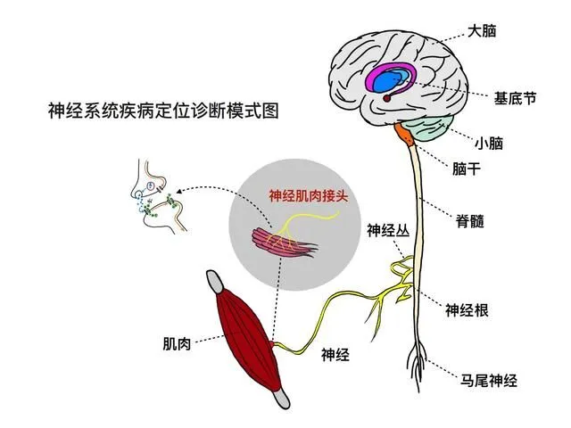
△ 神经系统疾病定位诊断模式图
神经系统疾病涵盖了广泛的范围，主要包括神经退行性疾病、神经传导障碍和神经炎症等，具体来说，神经系统疾病的分类可分为如下几种类型：
· 神经系统血管性疾病，包括脑梗死、脑出血、短暂性脑缺血发作；
· 中枢神经系统感染性疾病，如脑炎、脑膜炎以及脊髓炎等；
· 神经系统的变性疾病，常见的有阿尔茨海默病、帕金森病等；
· 神经系统外伤如硬膜下血肿、颅脑挫裂伤等；
· 肿瘤既包括原发于神经系统的肿瘤，如胶质瘤，还可包括颅内转移瘤；
· 脱髓鞘性疾病，包括多发性硬化、视神经脊髓炎等；
· 代谢和营养障碍性疾病，如维生素B1缺乏，引起的多发性神经病，或维生素B12缺乏，引起的亚急性联合变性；
· 其他分类包括中毒和遗传性疾病，如肝豆状核变性等。
虽然种类各不相同，但这些神经系统疾病所引起的主要症状大都相同，如意识障碍、运动障碍、语言和言语障碍、认知功能障碍以及情感障碍等。
而从病因上来划分，神经系统疾病又可简单的分为三种主要类型：
1、与特定大脑区域神经元丢失相关的疾病，例如帕金森病 (PD) 和多发性硬化症 (MS)；
2、与急性损伤后的神经元丢失有关的疾病，例如中风；
3、以及与细胞功能受损相关的疾病，例如癫痫。
其中，大脑异常发展的病因通常是多因素的，包括衰老、环境因素、慢性压力、创伤性脑损伤和基因突变，例如在淀粉样前体蛋白 (APP)、早老素-1和-2中发现的基因突变，或载脂蛋白E (ApoE)，它们都与神经退行性疾病的发展有关。
如今，神经系统性疾病已经成为现代医学的一个巨大挑战，因治疗难度大，大多数患者在确诊后无法获得任何有效和标准化治疗，使得这类疾病成为了世界上第二大死亡疾病，给无数家庭带来了严重的经济和心理负担。
随着时间的推进，科学界的不断探索使得我们对于神经系统疾病的认识和治疗手段也在不断提升。越来越多的研究致力于理解其发病机制，并寻找创新的治疗方法，以改善患者的生活质量。
02
干细胞在治疗神经系统性疾病上的临床应用
在众多治疗方法中，干细胞具有自我更新和多向分化潜能，成为了神经再生和修复的理想细胞来源，近几年的临床研究显示，干细胞已经成为了难治性神经系统疾病的一个非常有希望的治疗方案。
对于神经系统疾病的治疗，干细胞主要通过以下作用机制来发挥作用：
1、修复损伤：干细胞可以迁移到损伤的神经部位，通过细胞替代作用更换机体已经死亡或受损伤的神经细胞，修复受损神经网络；
2、细胞迁移：当体内组织发生损伤后，MSCs定向迁移至受损的组织或器官微环境中，维持或重塑其细胞功能的过程，这一过程涉及多种细胞因子、细胞信号通路参与。
3、细胞分化：干细胞可以分泌大量神经细胞活性生长因子和营养因子，激活神经细胞，促进新细胞的再生和重建；分泌血管生成因子，促进病变部位血管生成；
4、免疫调节：干细胞可抑制T细胞增殖、调节Th2/Th1细胞比例，还可阻滞B细胞的细胞周期，并抑制细胞增殖和产生抗体，起到抗炎的保护作用。
迄今为止，已有超200项应用各种干细胞方法治疗神经系统疾病的临床研究被注册，主要为多发性硬化症、中风、帕金森和脊髓损伤。以下是近年来干细胞在常见的几种神经系统疾病中的临床疗效。
1、干细胞与脑卒中（CVA）
脑卒中可导致神经元损伤，在《STEM CELL TRANSL MED》上的一项研究显示，干细胞可再生修复受损的大脑神经元，从而恢复脑中风患者后遗症症状：在9名年龄不等的脑中风偏瘫患者实验中，应用干细胞移植到脑内梗塞灶取得了一定的临床效益。
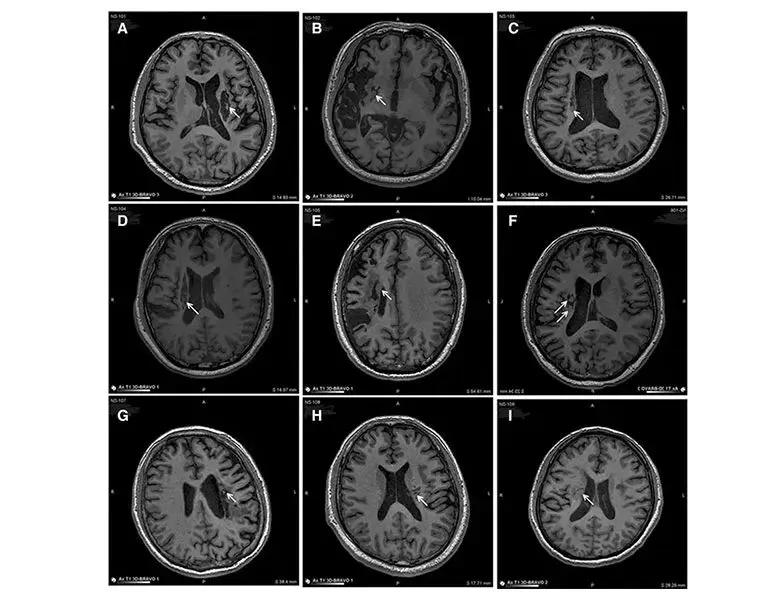
△ 9例患者的影像学显示病变区域的组织都发生了明显变化
从影像学上可以明显的看到，移植到脑内梗塞病灶的干细胞，通过分化为神经系统的各类细胞、分泌营养因子，促进神经和血管再生，修复受损的血-脑脊液屏障，减轻炎性反应等促进脑梗死动物的神经功能恢复，让9例临床患者偏瘫的症状得到了明显改善。
在重塑血管，维持脑中风血流量上，干细胞利用旁分泌功能发挥了“强项”，分泌血管内皮生长因子（VEGF），促进脑血管新生，重塑血管，恢复内皮完整性减轻通透性，减少细胞凋亡。
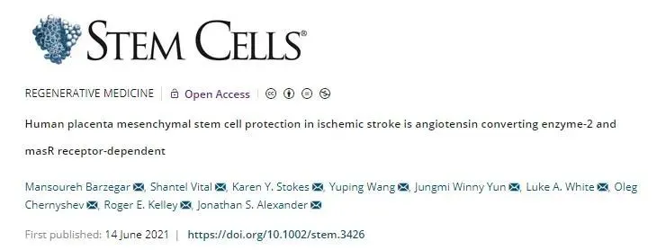
△ 研究证实干细胞能重塑血管，维持中风后脑血流量
2、干细胞与阿尔茨海默病（AD）
当然，干细胞也将为阿尔兹海默症、帕金森病等神经退行性疾病患者带来新的治疗选择。
《Advanced Science》上的文章表示：脐带间充质干细胞(hUC-MSCs)具有修复损伤神经细胞的功能，能够通过HGF-cMet-AKT-GSK3β通路调节tau蛋白磷酸化，显著提高阿尔茨海默病模型动物的学习记忆和认知能力。
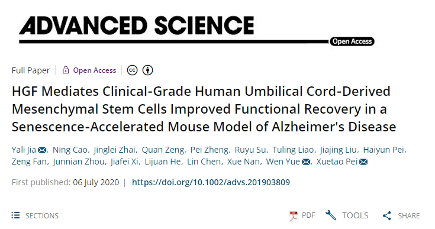
△ HGF介导临床级间充质干细胞改善功能恢复在衰老加速的阿尔茨海默氏病小鼠模型中
众多临床试验也表明，干细胞移植治疗阿尔兹海默病不仅能够调节脑内炎症性环境，而且促进神经再生和突触链接，有效改善病症，且安全无副作用。
3、干细胞与帕金森病（PD）
帕金森病（PD）是一种进行性的神经系统退行性疾病，多见于60岁以上群体，该疾病的特征在于大脑许多区域中特定脑细胞（神经元）的死亡，而干细胞疗法治疗帕金森疾病迎来新的突破。
为改良细胞移植后存活率较低的问题，哈佛医学院将调节T细胞与iPSC衍生的中脑多巴胺神经元(mDANs)共同移植给动物模型，结果显示mDANs存活显著提高，且动物行为恢复迅速强健，为帕金森疾病治疗提供了一种新的可能选择。
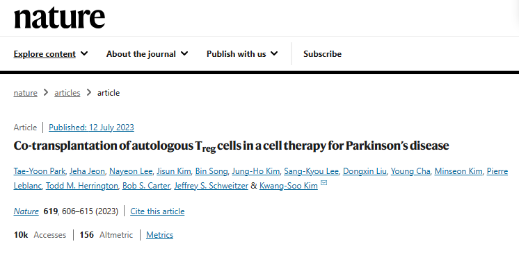
△ 自体Treg细胞联合细胞移植治疗帕金森病
此外，一款针对帕金森症的干细胞疗法也取得了令人鼓舞的成绩。2023年8月，拜耳宣布了针对帕金森症的干细胞药物—BRT-DA01已经达到一期实验终点，并为患者带来了令人惊喜的结果，12位受试者被分为高剂量组与低剂量组，而后在接受BRT-DA01疗法一年内，他们均未出现不良事件。
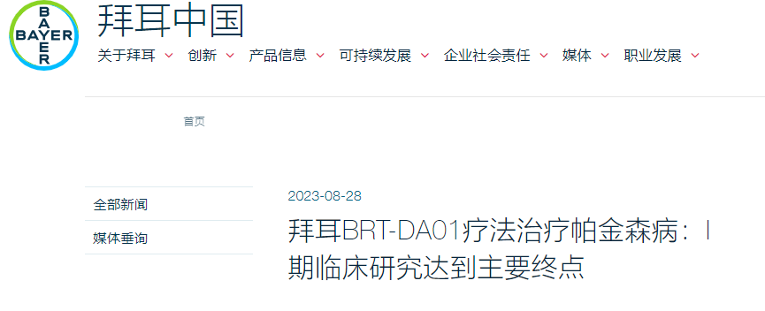
△ 据帕金森病综合评价量表MDS-UPDRS第三部分（运动功能检查）和运动功能状态评估工具Hauser Diary显示：所有受试者的次要探索性临床终点均有改善，其中高剂量组的受试者改善更为明显
据悉，BRT-DA01 II期临床试验正在计划中，预计于2024年上半年开始患者招募。饱受疾病困苦的帕金森患者或在不久的将来迎来新的选择与希望。
4、干细胞与肌萎缩性侧索硬化症（ALS）
面对退行性疾病，人类几乎是束手无策的，但干细胞技术的出现却为这类疾病来了新希望。比如几乎无法治愈的肌萎缩侧索硬化症（ALS），俗称“渐冻症”，是一种几乎无法有效治疗的罕见病，但iPSC干细胞技术的出现，似乎为其带来了一线生机。
《JNeurosci》上的一项研究显示，科学家们利用iPSC技术在渐冻症患者身上发现了一种可能的基因变异，甚至有望成为该病治疗的新靶点，这项新的研究为渐冻症治疗带来了新希望。（9例渐冻症患者移植干细胞后，神经功能明显改善）
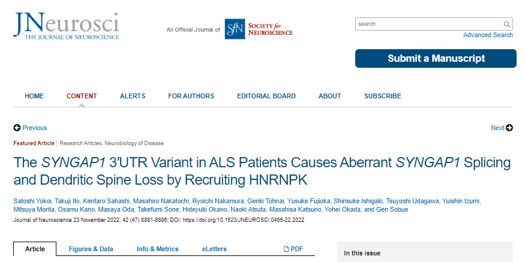
△ ALS患者中的SYNGAP1 3'UTR变异通过募集HNRNPK导致异常SYNGAP1剪接和树突棘丢失
在另外一项接受MSCs治疗的ALS患者中进行的临床研究表明，与实验动物一样，患者的疾病进展有所减缓。
病例对照研究涉及67名接受沃顿氏胶质干细胞 (WJ-MSCs) 治疗的ALS患者。所有患者均接受了沃顿胶 (WJ)-MSC的3次IT输注。在整个研究人群中，31%的患者观察到疾病进展减缓。对 WJ-MSC治疗的早期反应预测了ALS患者的结果并延长了生存期。
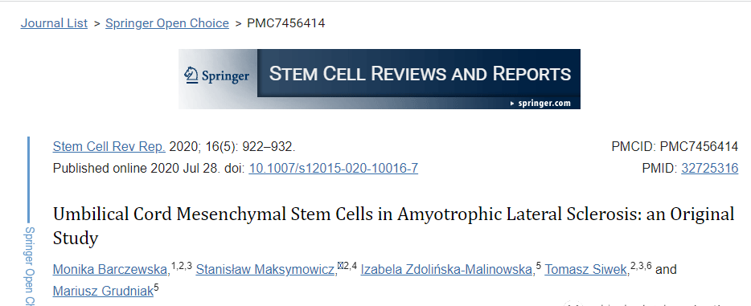
△ 间充质干细胞在肌萎缩性侧索硬化症中的应用:一项原始研究
5、干细胞与多发性硬化症（MS）
长期以来，多发性硬化症都被冠以“不死癌症”的可怕称呼，而干细胞作为一种新兴疗法，正在成为病患们新的救赎。
一项在灵长类动物MS模型中进行了MSC治疗，鞘内输注MSCs可延缓EAE猴子的神经功能障碍和神经元脱髓鞘。
临床研究证明，IT或IVMSC移植的过程是可行的、安全的和可耐受的。一些患者显示出临床稳定的迹象或通过扩展的残疾状态量表衡量的改善。
在瑞典对7名MS患者进行了I期临床研究。IV注射在临床缓解期间移植的自体BM-MSCs稳定了86%的MS患者的残疾状态。输注后一周内检测到的外周血中调节性T淋巴细胞比例增加表明MSCs在 MS患者中具有免疫耐受作用。已提出对MSC治疗的MS患者的主要结果进行分析，以使用MRI探索组织的微观完整性。
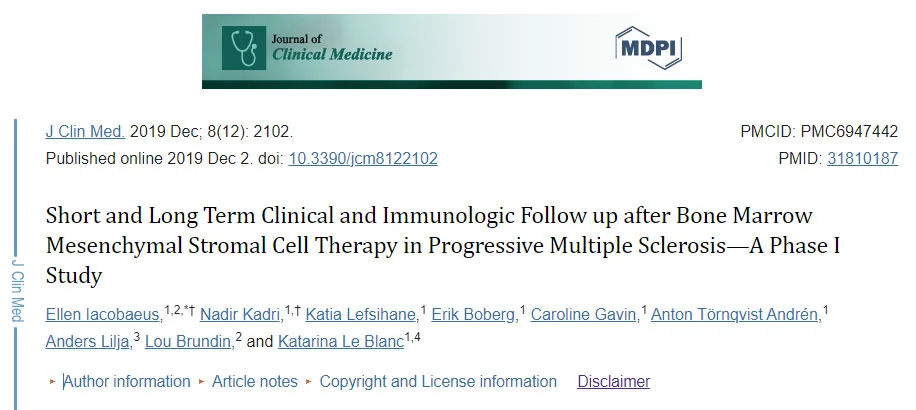
△ 进展性多发性硬化症骨髓间充质基质细胞治疗后的短期和长期临床和免疫随访-一期研究
6、干细胞与脊髓小脑失调症（SCA）
脊髓小脑失调症（SCA）也是一种难以治愈的神经退行性疾病。有研究采用静脉注射和鞘内注射MSCs治疗SCA，评估治疗的安全性和可行性。
结果显示，治疗后随访12个月，无严重移植不良事件发生，且可以减轻SCA症状，为MSCs移植治疗SCA和其他遗传性神经疾病提供了新的策略。
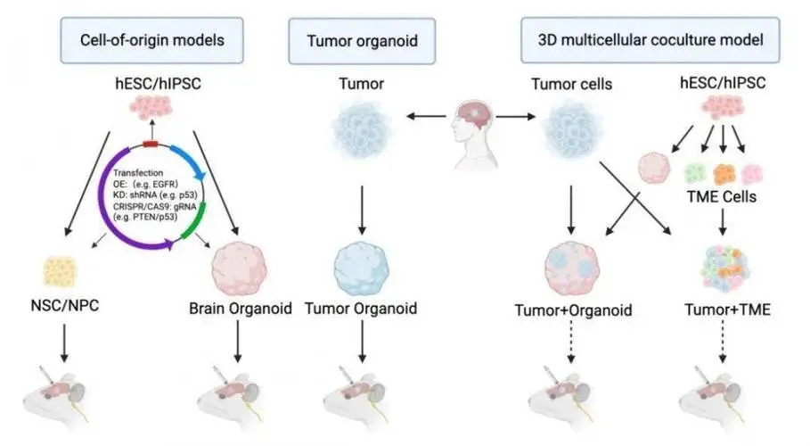
△ 干细胞干预治疗脊髓小脑失调症
7、干细胞与创伤性脑损伤 (TBI)
当对头部的突然猛烈打击或摇晃损坏大脑时，会发生创伤性脑损伤，脑震荡就是我们最常见的TBI类型。
由于神经可塑性，干细胞治疗创伤性脑损伤会刺激神经元（大脑可以通过在整个生命过程中形成新的神经连接来重组自身）。通过这种方式，我们不仅创造了新细胞，而且还加强了正在进行的神经可塑性。
中国神经修复学会（筹备委员会；CANR）和国际神经修复学会（IANR）中国委员会正式发布《颅脑创伤临床神经修复治疗指南2022版》。《指南》中明确提出将细胞治疗临床试验作为中重度颅脑损伤的I级证据，这将有利于提高基于细胞治疗的神经损伤修复疗效，并对推动颅脑损伤的基础与临床研究具有重要引领作用。
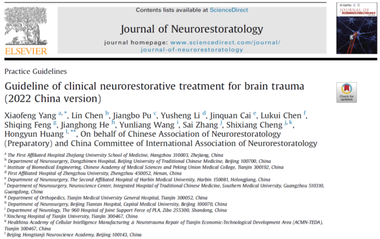
△ 《颅脑创伤临床神经修复治疗指南2022版》
此外，另一项国际期刊《International Journal of Oral Science》上一篇文章深度揭示了干细胞治疗TBI的潜在分子机制，它能减轻神经炎症，修复脑损伤，为TBI和其他神经系统疾病的临床干预提供了新的治疗靶点。
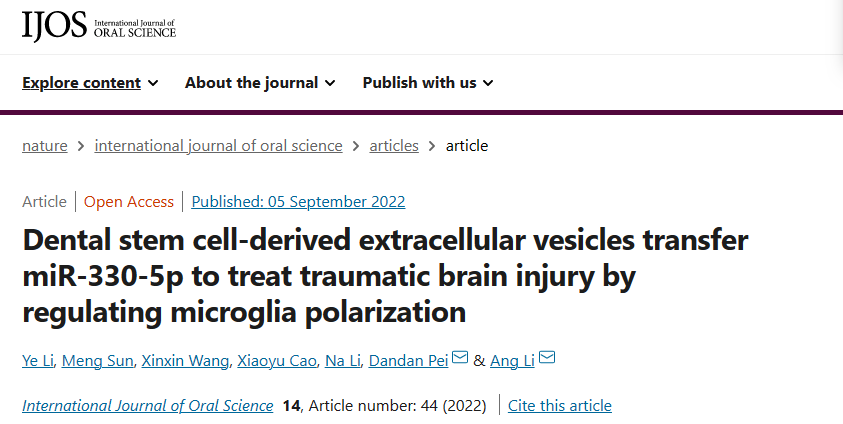
△ 研究证明：SHED-EVs/miR-330-5p通过靶向Ehmt2-H3K9me2介导的CXCL14转录改变小胶质细胞极化，以治疗创伤性脑损伤
人类神经系统性疾病种类繁多且多为较难治愈甚至无法治愈的疾病，干细胞具有组织再生、免疫调节等功效，是有别于传统医学的创新疗法，从人体细胞基因层面解决疾病问题，干细胞展现出了在众多疾病治疗上的广阔前景。
随着近年来再生医学技术的不断革新，也让进度缓慢的难治性、疑难性疾病迎来了“大迈进”时代，干细胞，有望为更多神经系统性疾病治疗带来新的选择。
参考资料：
[1]Co-transplantation of autologous Treg cells in a cell therapy for Parkinson's disease.https://doi.org/10.1038/s41586-023-06300-4
[2]Clive N. Svendsen & collegaues, Human iPSC-derived neural progenitor cells secreting GDNF provide protection in rodent models of ALS and retinal degeneration, Stem Cell Reports (2023). DOI: 10.1016/j.stemcr.2023.03.016. www.cell.com/stem-cell-reports … 2213-6711(23)00104-2
[3]Satoshi Yokoi et al, TheSYNGAP13'UTR variant in ALS patients causes aberrantSYNGAP1splicing and dendritic spine loss by recruiting HNRNPK, The Journal of Neuroscience (2022). DOI: 10.1523/JNEUROSCI.0455-22.2022
[4]Dental stem cell-derived extracellular vesicles transfer miR-330-5p to treat traumatic brain injury by regulating microglia polarization.https://doi.org/10.1038/s41368-022-00191-3.